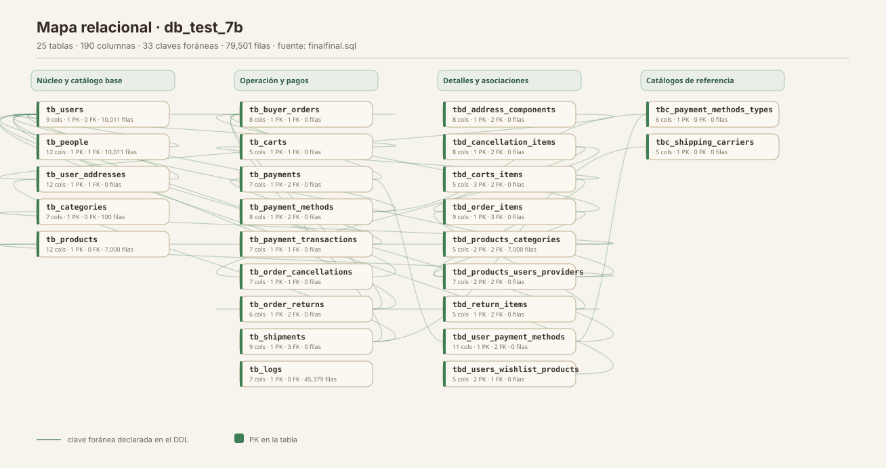

Documentación final
Explora el modelo interactivo, consulta el diccionario completo o abre el mapa relacional.

Alcance documentado en finalfinal.sql
El respaldo analizado declara 25 tablas, 190 columnas, 33 claves foráneas y 79,501 filas; también contiene 72 triggers, 26 vistas y 1 procedimiento almacenado. Cada tabla del modelo muestra sus totales. Los indicadores describen el contenido del archivo SQL, no una consulta en vivo a una base de datos.
25tablas
190columnas
33claves foráneas
79,501filas
72triggers
26vistas
1procedimiento
Mapa relacional
Vista estática de las cuatro áreas del esquema: núcleo, operación, detalles y catálogos.

Contenido de la práctica
- Diseño y lectura de un esquema relacional para un sistema E-Commerce.
- Identificación de claves primarias, foráneas, restricciones y relaciones entre entidades.
- Documentación de triggers, vistas y procedimiento almacenado.
- Consultas SQL para revisar objetos y datos de la base.
- Archivos de respaldo y datos de ejemplo para productos y categorías.